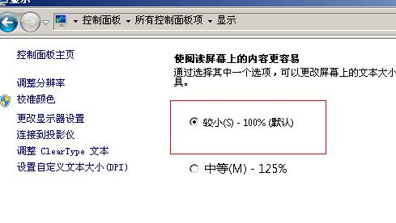

函数简介:
获取鼠标特征码. 当BindWindow或者BindWindowEx中的mouse参数含有dx.mouse.cursor时，
获取到的是后台鼠标特征，否则是前台鼠标特征. 关于如何识别后台鼠标特征.
函数原型:
string GetCursorShape()
参数定义:
返回值:
字符串:
成功时，返回鼠标特征码.
失败时，返回空的串.
示例:
mouse_tz = dm.GetCursorShape()
If mouse_tz = "7d7160fe" Then
MessageBox
"找到特征码"
End If
注:此接口和GetCursorShapeEx(0)等效. 相当于工具里的方式1获取的特征码. 当此特征码在某些情况下无法区分鼠标形状时，可以考虑使用GetCursorShapeEx(1).
另要特别注意,WIN7以及以上系统，必须在字体显示设置里把文字大小调整为默认(100%),否则特征码会变.如图所示. 